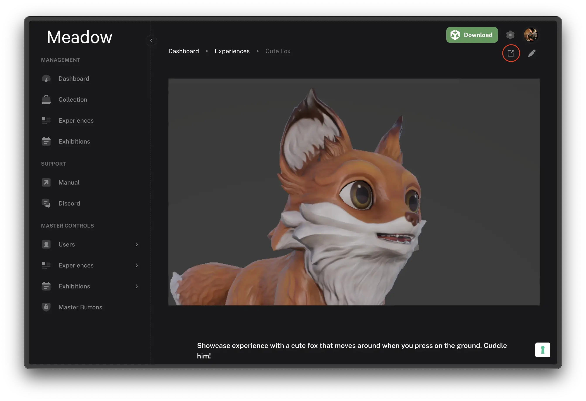
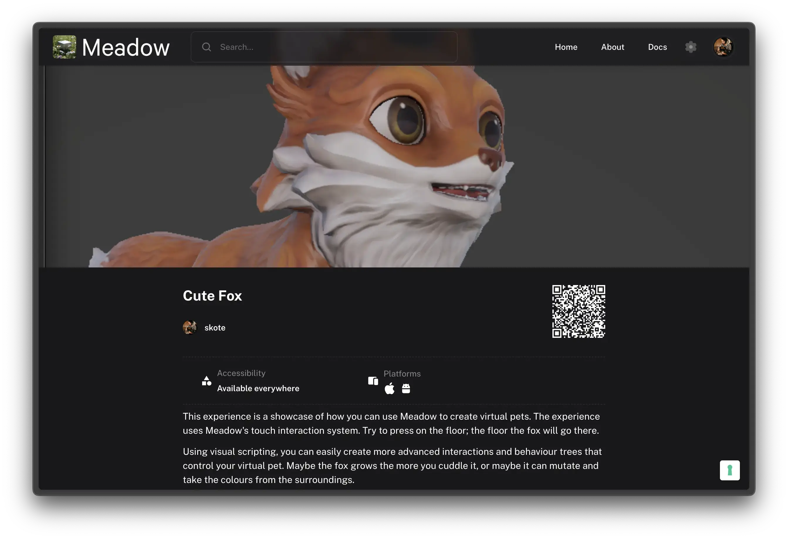

QR Codes
You can create QR codes for your Meadow experiences to make them easily accessible to your audience. When scanned, these QR codes will direct users to your experience either in the Meadow app or guide them to download it if they haven’t already installed it.
Using the Built-in QR Code
The simplest way to get a QR code for your experience is to use the one automatically generated on the experience page:
- Go to your experience in the Meadow dashboard
-
Click the “Public view” button in the top right corner to access the public-facing experience page

- Locate the QR code displayed on the page
-
Right-click the QR code and select “Save Image” to download it

Creating Custom QR Codes
You can also create your own QR codes using any QR code generator:
- Copy your experience URL:
https://app.meadow.space/e/your-experience-id - Visit your preferred QR code generator
- Paste the URL and generate your QR code
Advanced URL Options
Instant AR Launch
By default, when users scan the QR code, they’ll be taken to the experience’s “About” page in the Meadow app. From there, they need to press “Enter Experience” to launch the AR view. You can modify this behavior:
- Add
?ito the end of your experience URL to launch directly into AR mode - Example:
https://app.meadow.space/e/your-experience-id?i
Known Limitations
- Some mobile browsers may not recognize the dynamic link in the QR code. In these cases, users will be redirected to the web app instead, where they can open the experience in the Meadow app.
- We are actively working on improving QR code compatibility across different devices and browsers.
Future Updates
We are developing additional QR code features that will be available soon:
- QR code management system
- Dynamic QR codes
- Enhanced tracking and analytics
Stay tuned for these upcoming features that will make it even easier to share your experiences.